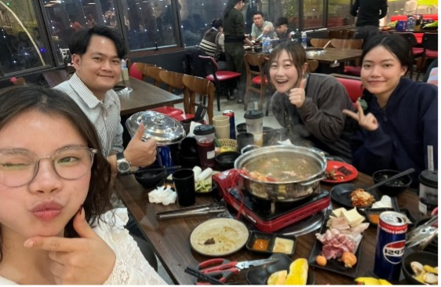

ベトナムの楽しみ方
海老澤博香
ベトナムを予習しよう
ベトナムに行くまえに、ベトナムの歴史や社会体制を事前知識として入れておくのがおすすめです！
- ベトナムにはどんな歴史がある？
- ホーチミンは何をした人？
- 街中にあるこの旗の意味は？ など
ベトナム「ならでは」を楽しもう
○ダーカウ
公園に行くと、多くの人がベトナムの国民的スポーツ「ダーカウ」を楽しんでいます。ダーカウは重りのついた羽根をコート内で落とさずに蹴り合うというものです。見応え抜群！難しいですが、やってみたらハマること間違いなし！

〇バイクの二人乗り
ベトナムの主な交通手段はバイク。信頼できる相手に乗せてもらいましょう！マスクは必須(^^;用意されたヘルメットは絶対被ってね☆
おすすめスポット３選
〇マッサージ店
ベトナムは物価が激安なので、同じ内容のマッサージを日本の半額～1/3ほどの値段で受けられます。
このお店は電話で日本語が話せるスタッフもいて、手厚くサービスしてくれます。研修に疲れたらぜひリラックスしに行ってみてください✨。
〇カラオケ
ベトナム人の友達ができたらJ-POPやK-POPで一緒に盛り上がりましょう！AI採点などの機能はなく、YouTubeの映像を流すだけのような感じですが、十分に楽しめます。
〇プリクラ
日本の爆盛りプリクラとは違って、韓国発のナチュラルなプリントシールで思い出を作ることができます。ぬいぐるみやカチューシャを使って一味違ったプリクラ体験を！
日本との違いを見つける
〇日本にもあるお店
ハイフォンに滞在するなら必ず行くことになるのはイオンモールですね！もちろんそこにはダイソーなどの日本でよく見かけるお店がたくさんありますが、果たして全く同じものなのでしょうか…？
味が若干違ったような…？表記は日本でも「MARUKAME」でしたか…？
〇日本にもある商品
もちろん日本でよく見かける商品もたくさんありました！…が、日本ではカップヌードルにこんなフォークは入っていませんね^^（たぶんシーフード味）「せっかくベトナムに来たのに、日本でも買えるものを買いたくない！」と思う方もいるかもしれませんが、この少しの違いが逆におもしろいので、ぜひ注目してみてください♪
着たいアオザイの検討をつけよう
アオザイ試着体験ではたくさんの種類の中から一つを選ばなければいけません。現地では選ぶ時間が少ないので、何色がいいのか、どんな形がいいのか、事前に着たいアオザイを検討しておくのがよいと思います。［ザ・アオザイのようなもの／ドレスのようなもの／チャイナ感が強いものetc.］
※ズボンの貸し出しはないので当日はアオザイに合う黒のズボンを履くことをおすすめします！
タンデムパートナーとたくさん遊ぶ！
短い滞在期間ですが、タンデムパートナーに会えるせっかくの機会なので、たくさん遊んで、色々なところに連れて行ってもらいましょう♪
